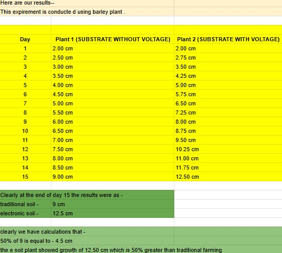
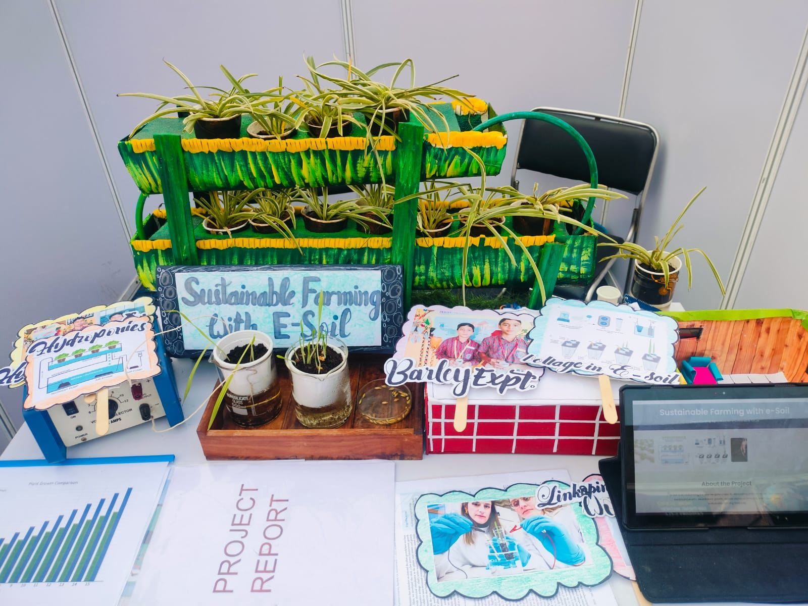
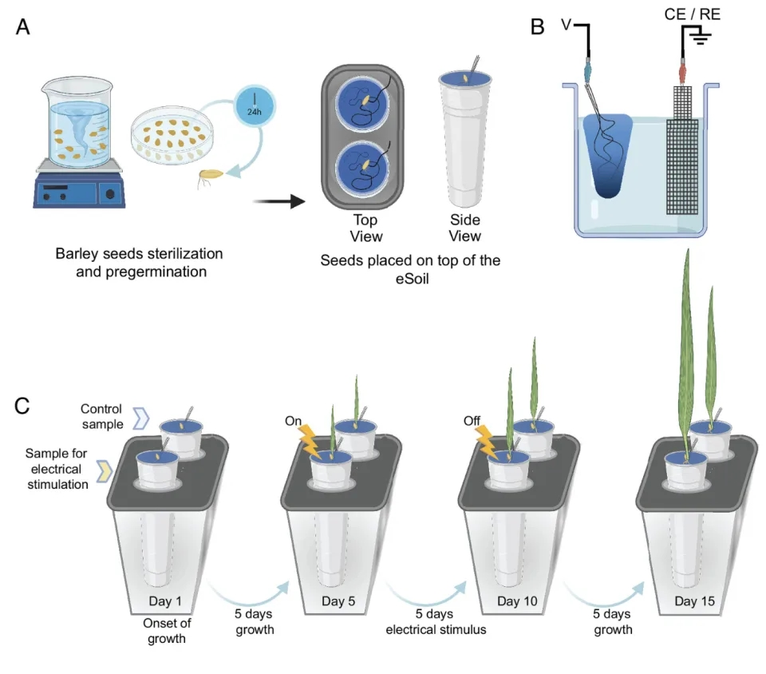
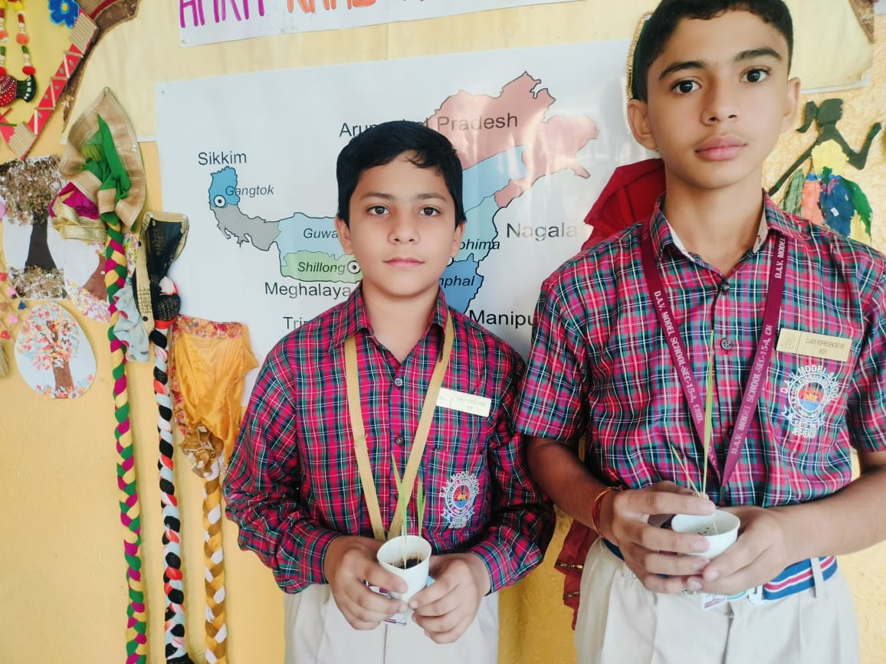
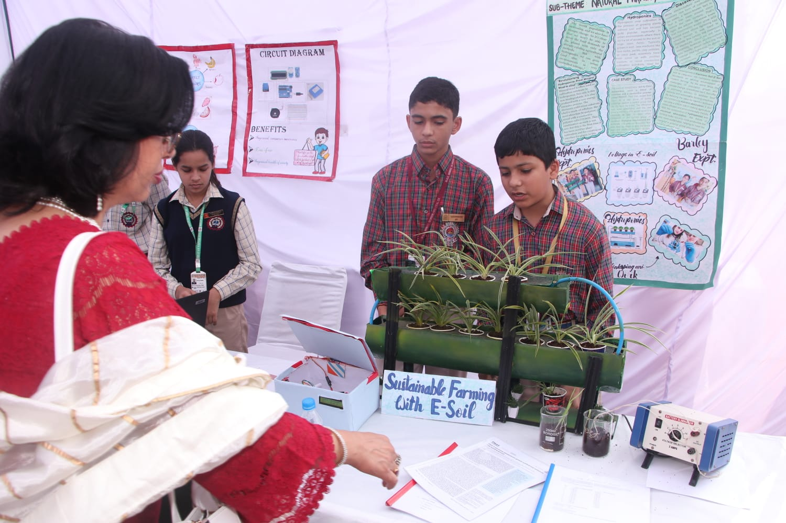
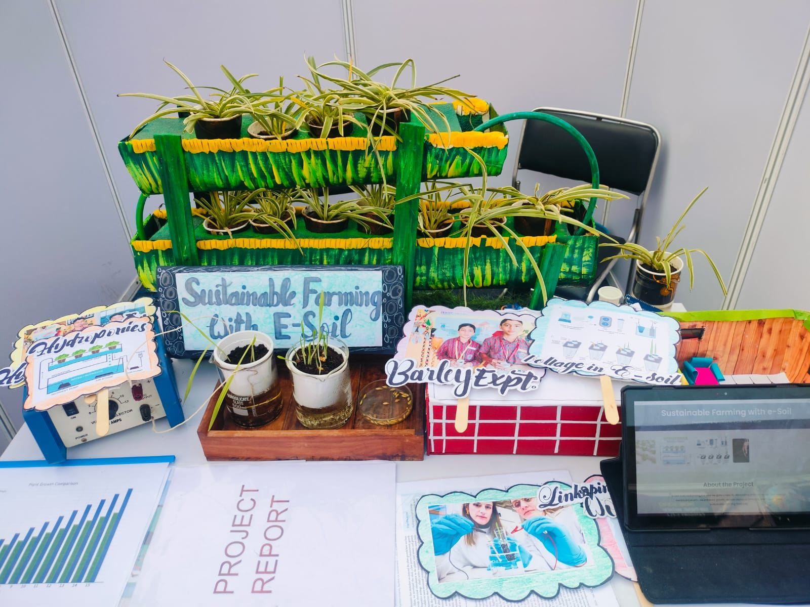
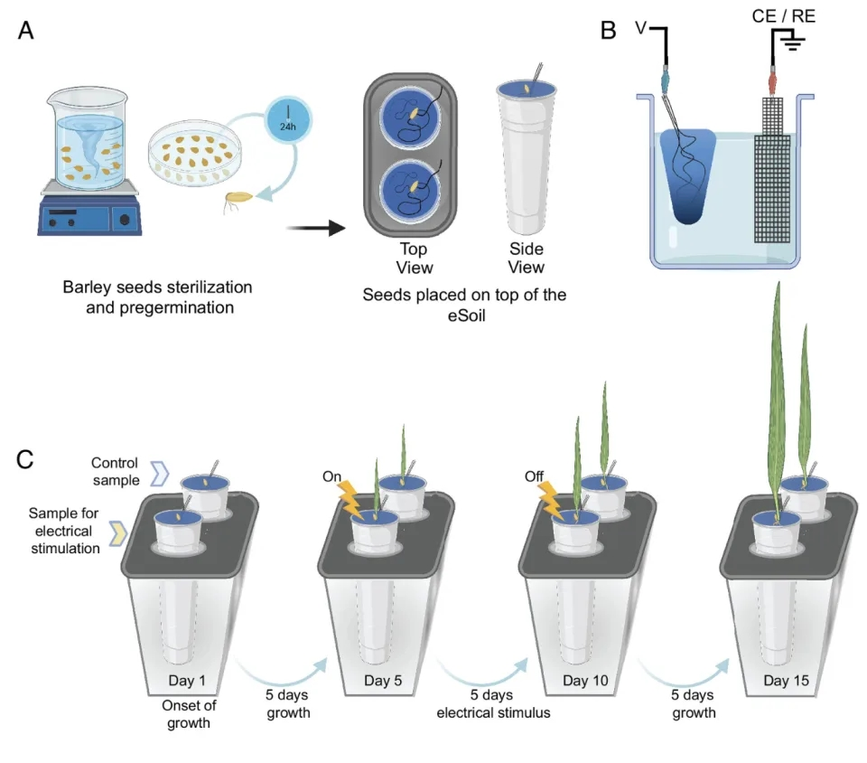
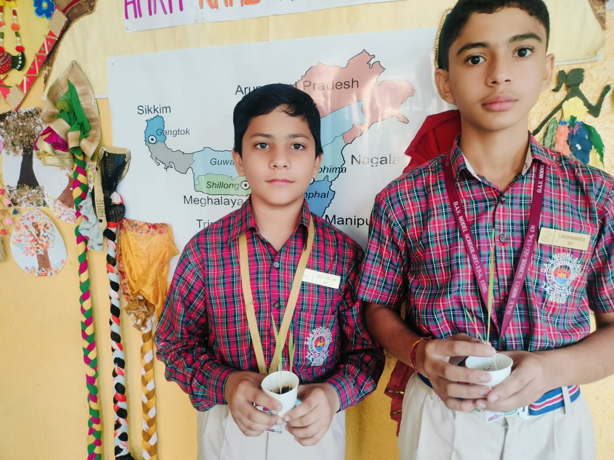
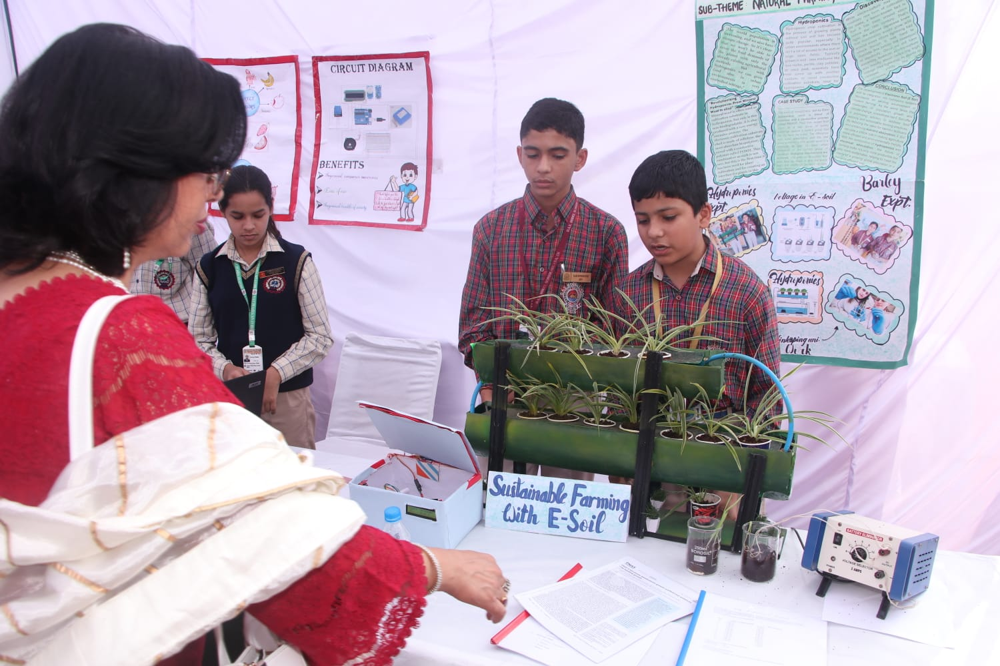

Welcome to SFES
SFES (Sustainable Farming with E-Soil) is an innovative approach toward a greener future.
We combine modern hydroponics with an electrically enhanced substrate known as
E-Soil, designed to boost plant growth by nearly 70%.
Our goal is to revolutionize sustainable agriculture using clean technology and accessible materials.
Our Sustainable Farming Model
Our model integrates hydroponics with a specially engineered substrate—E-Soil. This combination enables
faster plant growth, higher nutrient absorption, and climate-friendly farming. The system is designed to be
low-maintenance, eco-friendly, and highly efficient. Applying controlled voltage increases nitrogen
solubility in the medium, resulting in overall improved plant growth.
What is E-Soil?
E-Soil is a voltage-activated substrate created using coco peat, a cellulose-rich material known for
high water retention and excellent aeration. Cellulose conducts electricity better than typical soil.
Applying a safe electrical voltage increases nitrogen solubility, enhances nutrient uptake, and
accelerates plant growth significantly.
Our Experiments
We conducted controlled experiments on barley seeds using regular coco peat versus E-Soil.
- Faster germination
- Stronger and longer roots
- Nearly 70% higher physical growth
- Healthier leaves
- Much lower water usage with higher yield
These results show the clear advantages of voltage-enhanced substrates.

Plants Used in the Model
For the model demonstration, we chose the Spider Plant because:
- It is an excellent air-purifying indoor plant
- Requires very little maintenance
- Performs extremely well in hydroponic setups
- Shows visibly improved growth in E-Soil
Earlier tests were done on barley, which showed remarkable enhancements.
Acknowledgment
We express our gratitude to our teachers and mentors for their support throughout the project:
- Sangeeta Adlakha Ma’am, Priyanka Ma’am, and Harpreet Sir for essential guidance
- Aruna Ma’am for motivating us and helping us reach this stage
- Linköping University for introducing the concept of E-Soil to the world
Our Achievements
SFES received recognition for innovation in sustainable farming and electrical enhancement in
hydroponics. We reached the CBSE National Science Exhibition 2024 and were featured in the newspaper.
 






